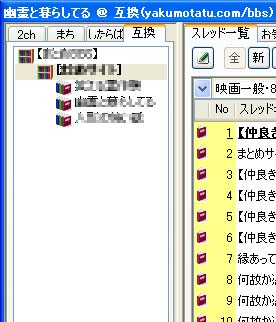

Duawinは現在作者のサイトにアクセスできなくなっていますが、どこかのアップローダーを探せば入手できるかもしれません。 まず、このリンクのテキストファイルを右クリックして「対象をファイルに保存」メニューを選びダウンロードします。ファイル名を「BBS_TITLE.txt」などとお好みで変更してからDuawinがインストールされているフォルダのbbsmenuフォルダにコピーまたは移動します。
作業が完了したらDuawnを起動し、ウィンドウ内でマウスの右ボタンを押しながら右方向へドラッグすると別ウィンドウが開きます。そのウィンドウの「互換」タブに設定した内容が登録されています。

レス書き、スレ立て共に普通にできます。 板の追加をしたら、設定用のテキストファイルも修正してアップロードする予定です。
戻る